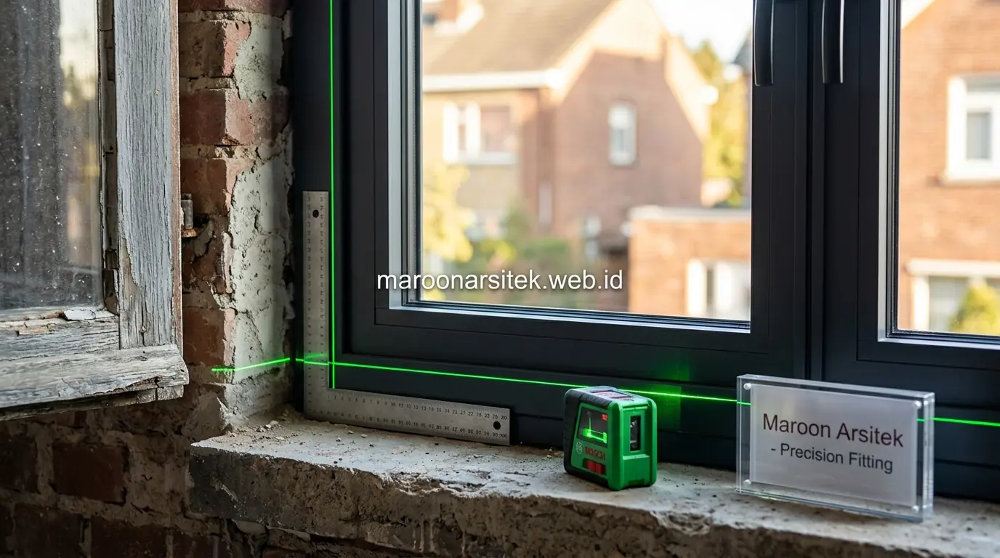

Selain kebocoran dan retak, rumah lama sering menghadapi masalah kelembapan dinding, kusen pintu dan jendela yang tidak lagi presisi, serta instalasi listrik yang sudah tidak sesuai standar keamanan terkini. Maroon Arsitek menangani ketiga masalah tambahan ini sebagai bagian dari layanan jasa renovasi rumah menyeluruh di wilayah Jakarta.
Masalah kelembapan, kusen yang macet, dan instalasi listrik lama sering dianggap sepele padahal berdampak signifikan terhadap kenyamanan dan keamanan penghuni rumah. Bagian berikut menguraikan pendekatan penanganan ketiga masalah tersebut sebagai pelengkap renovasi rumah lama secara menyeluruh.
Penanganan Kelembapan dan Jamur pada Dinding Rumah Lama
Kelembapan pada dinding rumah lama umumnya bersumber dari rembesan air tanah, kebocoran tersembunyi, atau ventilasi yang tidak memadai, sehingga penanganan perlu dimulai dari identifikasi sumber kelembapan sebelum melakukan perbaikan permukaan dinding yang terdampak. Penanganan yang hanya menutupi gejala tanpa mengatasi sumber berisiko membuat jamur muncul kembali.
Pemeriksaan dilakukan untuk membedakan sumber kelembapan, apakah berasal dari luar bangunan seperti rembesan tanah, atau dari dalam seperti kondensasi akibat sirkulasi udara yang buruk, karena kedua penyebab ini memerlukan pendekatan penanganan yang berbeda.
Perbaikan mencakup aplikasi lapisan waterproofing pada area yang teridentifikasi sebagai sumber rembesan, dilanjutkan dengan perbaikan permukaan dinding yang telah rusak akibat kelembapan sebelum finishing akhir diterapkan kembali.
Perbaikan Sirkulasi Udara untuk Mencegah Kondensasi Berulang
Kebutuhan pencegahan jamur jangka panjang dijawab melalui perbaikan sirkulasi udara pada ruang yang rentan kondensasi, seperti penambahan ventilasi atau penyesuaian bukaan, mengurangi kelembapan udara yang menjadi pemicu utama pertumbuhan jamur pada dinding.
Perbaikan sirkulasi ini menjadi solusi jangka panjang yang lebih efektif dibanding sekadar mengecat ulang dinding yang berjamur, karena mengatasi akar penyebab kondensasi yang terus-menerus terjadi tanpa perbaikan sirkulasi udara yang memadai.
Perbaikan Kusen Pintu dan Jendela yang Tidak Lagi Presisi
Kusen pintu dan jendela pada rumah lama sering mengalami pergeseran atau pelapukan akibat usia, menyebabkan pintu dan jendela sulit dibuka-tutup atau tidak lagi menutup rapat, sehingga perbaikan perlu mempertimbangkan kondisi kusen secara menyeluruh, bukan hanya mekanisme engselnya. Masalah ini sering dianggap sepele namun memengaruhi kenyamanan dan keamanan rumah.
Evaluasi dilakukan untuk menentukan apakah kusen masih dapat diperbaiki atau perlu diganti sepenuhnya, mempertimbangkan tingkat kerusakan material dan tingkat pergeseran posisi yang mungkin sudah memengaruhi kesejajaran struktur kusen secara keseluruhan.
Penggantian kusen, apabila diperlukan, menjadi kesempatan untuk sekaligus memperbarui material menjadi lebih tahan lama, seperti beralih dari kayu konvensional ke material aluminium atau kayu olahan dengan ketahanan lebih baik terhadap perubahan cuaca.

Evaluasi Tingkat Kerusakan Sebelum Menentukan Perbaikan atau Penggantian
Kebutuhan solusi yang tepat guna dijawab melalui evaluasi tingkat kerusakan kusen secara menyeluruh, membantu menentukan apakah perbaikan lokal sudah cukup atau diperlukan penggantian total untuk hasil yang lebih tahan lama.
Evaluasi ini mencegah pemborosan biaya akibat perbaikan berulang pada kusen yang sebenarnya sudah tidak layak dipertahankan, sekaligus memastikan solusi yang diterapkan benar-benar menyelesaikan masalah secara tuntas.
Pembaruan Instalasi Listrik Lama Sesuai Standar Keamanan
Instalasi listrik pada rumah dengan usia bangunan cukup lama sering kali sudah tidak sesuai dengan standar keamanan terkini, baik dari sisi kapasitas daya maupun kondisi kabel yang mungkin sudah mengalami penurunan kualitas isolasi. Pembaruan instalasi menjadi bagian penting renovasi yang berkaitan langsung dengan keselamatan penghuni rumah.
Pemeriksaan menyeluruh dilakukan terhadap kondisi kabel, panel listrik, dan titik instalasi yang ada, mengidentifikasi area yang memerlukan pembaruan segera akibat risiko keselamatan seperti kabel yang sudah rapuh atau kapasitas yang tidak lagi memadai.
Pembaruan instalasi turut mempertimbangkan kebutuhan daya listrik masa kini yang cenderung lebih tinggi dibanding saat rumah pertama kali dibangun, mengingat bertambahnya jumlah perangkat elektronik yang digunakan penghuni dalam kehidupan sehari-hari.
Pemeriksaan Kapasitas Daya sesuai Kebutuhan Perangkat Modern
Kebutuhan kapasitas listrik yang memadai dijawab melalui pemeriksaan dan penyesuaian kapasitas daya sesuai kebutuhan perangkat elektronik modern, yang umumnya jauh lebih tinggi dibanding kebutuhan saat instalasi awal rumah pertama kali dipasang bertahun-tahun lalu.
Penyesuaian kapasitas ini mencegah risiko korsleting atau pemadaman berulang akibat kelebihan beban, sekaligus memastikan instalasi listrik rumah siap mendukung kebutuhan perangkat elektronik yang terus bertambah dari waktu ke waktu.